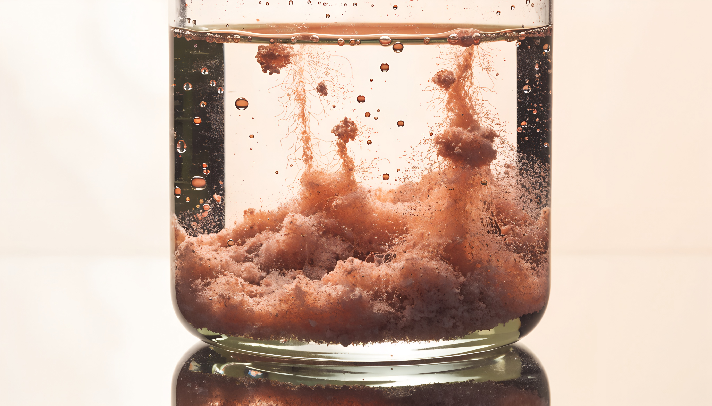

Jacques ne produit pas de rapports. Il provoque des précipitations stratégiques. Ce qui était flou, dissous, contradictoire devient un solide que vous pouvez prendre en main.
Vous vendez un outil. Ils cherchent une conviction.
Point de précipitationLe positionnement premium est tenable — à condition d'arreter de parler de features.
L'ICP n'est pas le CTO. C'est le VP Ops qui signe sans comprendre la tech.
Le mot-cle manquant dans tout le messaging : fiabilité.
Un deck, un persona, une phrase. Le reste est du bruit en solution.
Le conseil qui ajoute de la matiere est un problème déguisé en solution. Le vrai diagnostic soustrait.
Chaque entreprise transporte un précipité stratégique en suspension. Il suffit d'un réactif — la bonne question, au bon moment, dans le bon ordre — pour que le solide apparaisse. Ce qui reste apres la decantation, c'est la seule chose qui merite un deck.